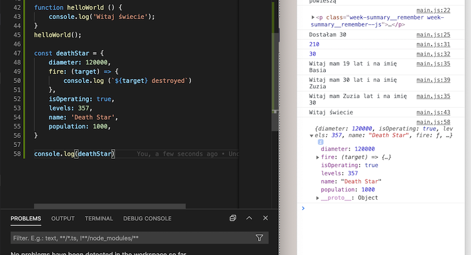
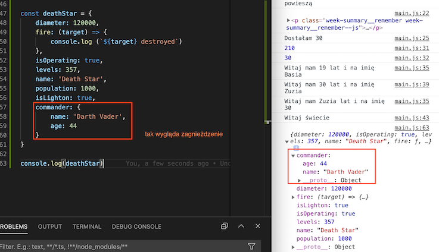
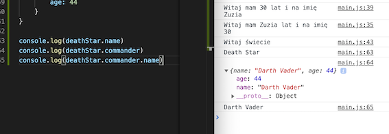
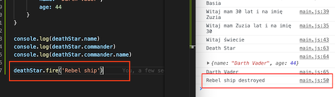
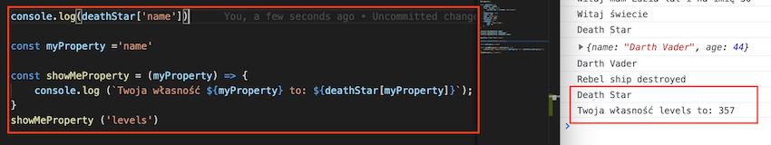

Do czego JavaScript
Pozwala na interakcje z użytkownikiem i "robi rzeczy". Korzysta ze
skryptu ECMA (ES6+), który jest ustandaryzowanym językiem
programowania. Kod wrzucamy tuż przed zakończeniemy body, zaczynamy go
znacznikiem script. Aby połączyć kod z dokumentem js należy użyć opcji
src (nie href).
JavaScript składa się z:
-wartości,
-operacji porównywania,
-literałów,
-zmiennych,
-obiektów
-i funkcji.
Polecenie console.log pozwala na zobaczenie działania kodu w
konsoli (console), która znajduje się w narzędziach deweloperskich.
Alt+command+I pozwala otworzyć narzędzia deweloperskie. W
Windowsie i w Linuksie są to F12.
const (zmienna) pozwala przypisać wartości np. const age, gdzie
w osobnym miejscu zdefiniujemy nasz wiek age=32, lub const firstName =
'Zuzia', ma stałe połączenie. Zmienna let pozwala zmienić
(podmienić) wartość np. let newName i np. pod newName dopisujemy inne
imię.
literały są zapisywane przez tzw. backtick `` i wyglądają tak:
console.log ('Siema, nazywam się ${firstName')i mam ${age} lat.`)
Typy proste w js (primitives)
string - tekst, który musimy wziąć w pojedynczy lub podwójny
cudzysłów.
number
bigint - duża liczba
boolean - true lub false
wartość celowo niezdefiniowana, po to, abyśmy mogli ją później dopisać
undefined - brak definicji
symbol (rzadko używane)
polecenie typeof pozwala sprawdzić jakiego typu jest dana
zmienna np. typeof newName=string, typeof age=number, typeof
carColor=null.
Immutability oznacza, że nie można zmienić
primitive values, możemy jedynie dopisać im wartości, a raczej
edytować połączenie między nimi.
Funkcje w JS
Funkcje posiadają argumenty, np.liczby, a słowem kluczowym jest
return, które determinuje co ma nam zwrócić dana funkcja - jakiego
rodzaju wynik. Jeśli chcemy uzyskać wynik w rozumieniu matematycznym,
możemy użyć nazwy funkcji calculate. Jeśli funkcja nie ma
zdefiniowanego return, to będzie to undefined.
Argumentów możemy podać kilka w jednym miejscu lub nie podawać
żadnego.
Po co stosuje się funkcje?
Deklarujemy kod, który się powtarza zgodnie z zasadą DRY (don't
repeat yourself).
Kod staje się też bardziej czytelny.
Łatwiej nam znaleźć błędy.
Wystarczy, że zmienimy dane w
jednym miejscu, by zaktualizowały się dane wszędzie.
JavaScript jest językiem obiektowym
Nasz świat jest obiektowy - np. człowiek ma imię, kolor skóry, wiek,
kolor oczu, włosów, zawód itp.
Samochód ma kolor, moc silnika,
liczbę koni mechanicznych, liczbę kół, liczbę miejsc itp., są to tak
zwane właściwości lub własności (properties).
Zarówno człowiek, jak i samochód mogą wykonywać różne
akcje (zadania), np. człowiek może chodzić, jeździć, mówić,
tańczyć, spać a samochód jeździć do przodu, cofać się, używać
klaksona, wycieraczek itp.
Również obiekty w JavaScript możemy opisać.
Używamy do tego par, które składają się z klucza i wartości
(key:value), np. diameter:10000, name:'deathStar' i na końcu
wstawiamy , .
Klucz musi być unikalny w ramach obiektu (wystąpić tylko raz), a
jako wartość możemy podać
prymitywy (string, boolean, number itp. oraz funkcje i
zagnieżdżenia). Poniżej opisany obiekt - Gwiazda śmierci.

Poniżej możemy zobaczyć jak wygląda zagnieżdżenie obiektu.

Możemy się odwołać do danej właściwości (znaleźć jej wartość) używając
.notation (dot notation). W zależności od tego jak bardzo chcemy
zagłębić się w szczegóły, należy po dot wypisać wartość, której
szukamy jak na poniższym obrazku.

Wywołanie akcji ustawionej w js jako fire.

Możemy również użyć opcji bracket notation. Wtedy musimy naszą
właściwość (własność) opakować w stringi.
